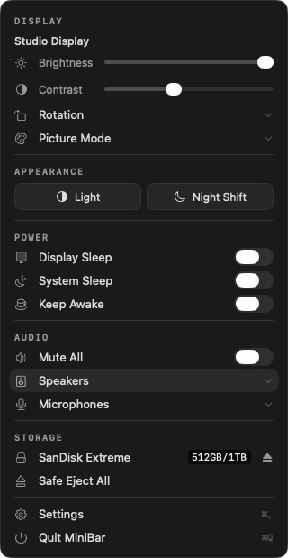
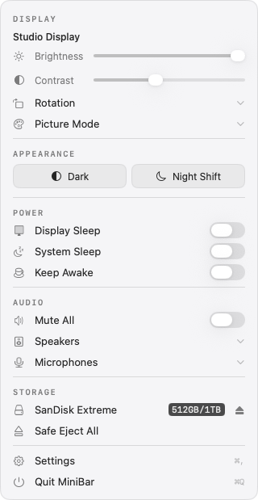
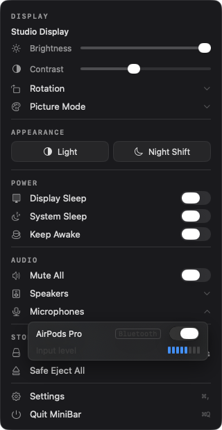

Brightness, volume, power and storage — one native panel in your menu bar.
Built with SwiftUI and AppKit. No Electron, no background bloat.
View on GitHub

Dark and light. Follows your system until you choose otherwise.
Click the menu bar icon. That's the whole interface.
Brightness and contrast on native sliders, with fine scroll-wheel adjustment and rotation.
Picture Mode is visible in the panel but not yet implemented.
Display sleep, system sleep and keep-awake — one toggle each, no digging through System Settings.
Mute everything, or route speakers and microphones to AirPods and other devices, with a live input level meter.
Used and total space at a glance. Eject one drive, or safely eject all.
Enable what you need. Off means gone from the panel, using no memory.
English and Simplified Chinese. Labels measure themselves, so long translations never collide with sliders.
Pick your output and input in two clicks. The live meter shows your microphone is actually working — no guessing, no test calls.
Devices are enumerated when you open the panel, and the meter only runs while its row is expanded. Close it, and everything stops.

MiniBar is a personal open-source project by @Samuelonly. It lives in your menu bar and stays out of your way: no Dock icon, no polling while the panel is closed, and modules that fully unload when disabled.